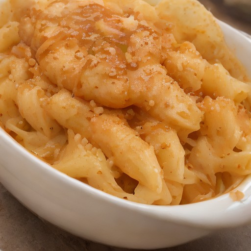

パスタ
焼き芋 × とろけるバターカラメル：悪魔の甘辛スパイスパスタ

焼き芋の甘辛さ、とろけるバターカラメルソースで、今までにない悪魔的な美味しさに。一口食べたら、止まらない、まさに魅惑のスパイスパスタ！
💡 こんな時・こんな人におすすめ！
特別な日に、特別な人へ
📋 必要な材料（ポストイット風）
材料リスト 1
- 焼き芋2個
- バター50g
- グラニュー糖50g
材料リスト 2
- 食塩小さじ1
- コショウ少々
- パスタ適量
🍳 作り方ステップ
1
焼き芋を薄切りにすると、より早く調理できます。
2
バターとグラニュー糖を鍋に入れて弱火で溶かす。
3
溶けたら、塩とコショウを加えて混ぜる。
4
焼き芋を加えて、弱火で1分ほど煮込む。
5
パスタを茹でる。
6
茹で上がったパスタを、溶けたバターソースで和える。
7
お好みで、ココナッツミルクやシナモンなどを加えても美味しい。
8
完成！